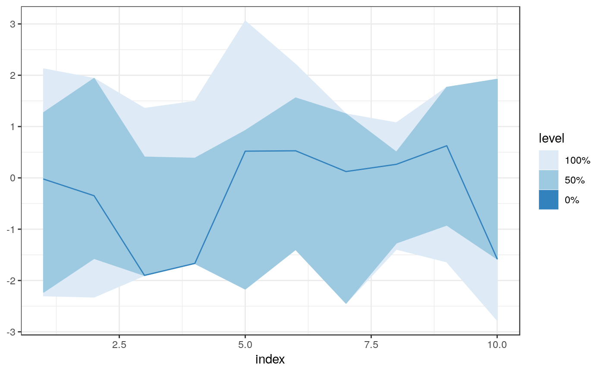
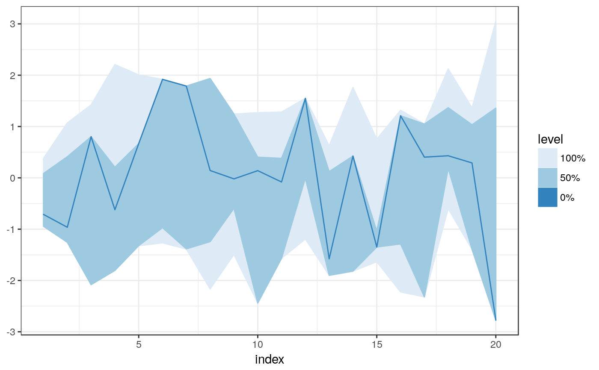
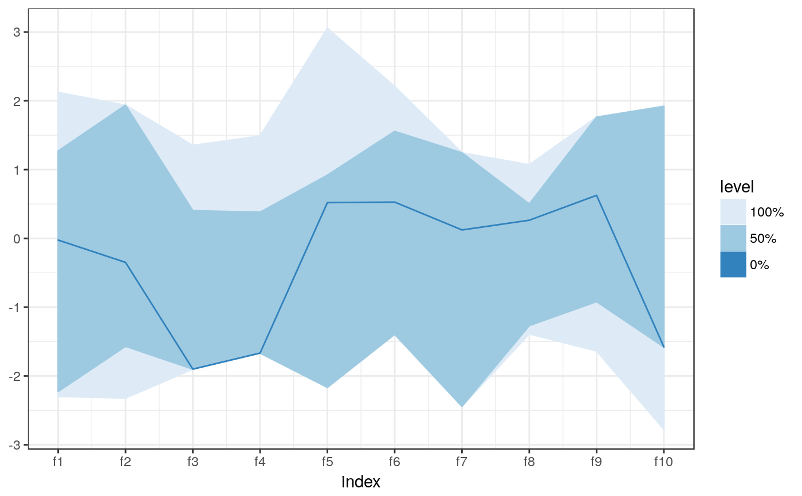
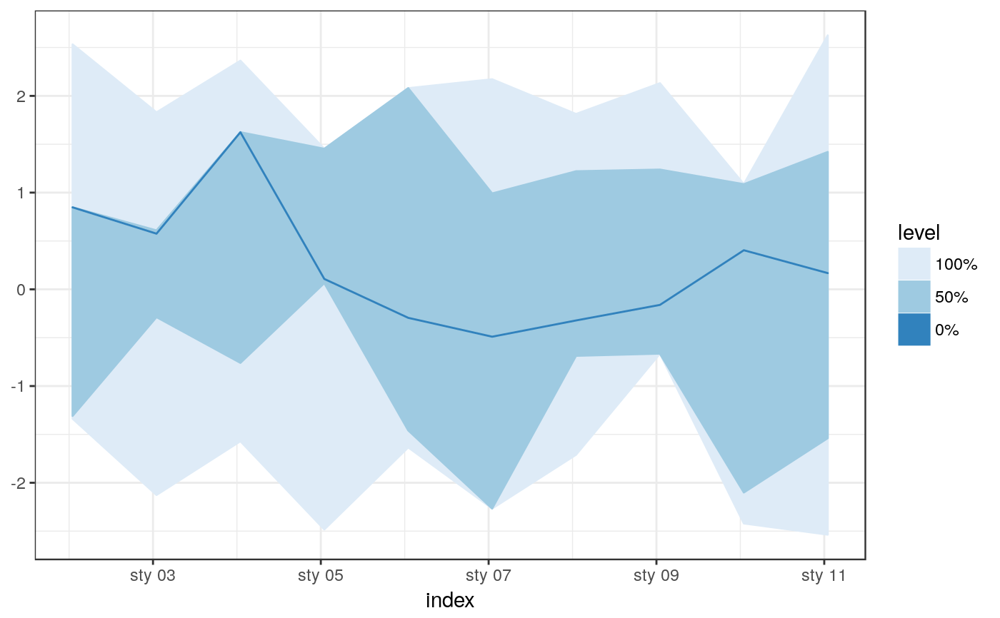
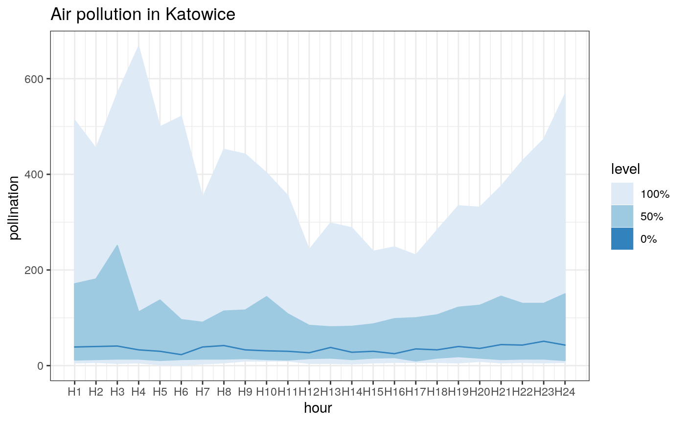

fncBoxPlot.RdFunctional boxplot based on Modified Band Depth
fncBoxPlot(u, X = NULL, bands = c(0, 0.5), method = "MBD", byrow = NULL, ...)
| u | data matrix |
|---|---|
| X | reference set. If null u will be used as reference. |
| bands | limits for bands |
| method | depth method |
| byrow | byrow |
| … | other arguments passed to fncDepth |
# some data: x <- matrix(rnorm(200), ncol = 10) fncBoxPlot(x, bands = c(0, 0.5, 1), method = "FM")fncBoxPlot(x, bands = c(0, 0.5, 1), method = "FM", byrow = FALSE)colnames(x) <- paste0("f", 1:ncol(x)) fncBoxPlot(x, bands = c(0, 0.5, 1), method = "FM")# fncBoxPlot handles zoo and xts objects library(xts)#>#> #>#> #> #>x <- matrix(rnorm(200), ncol = 10) time <- as.POSIXct(1:ncol(x) * 86400, origin = "1970-01-01") x_xts <- xts(t(x), order.by = time) fncBoxPlot(x_xts, bands = c(0, 0.5, 1), method = "FM")data("katowice.airpollution") pl <- fncBoxPlot(katowice.airpollution, bands = c(0, 0.5, 1), method = "MBD") pl + ggtitle("Air pollution in Katowice") + labs(y= "pollination ", x = "hour ")